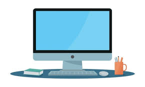
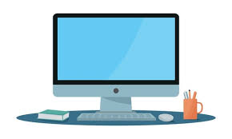

کامپیوتر یا رایانه، دستگاهی الکترونیکی است که اطلاعات را پردازش میکند. این دستگاه میتواند دادهها را دریافت، ذخیره، تحلیل و نتیجهای مناسب ارائه کند. امروزه کامپیوترها نقش حیاتی در زندگی روزمره، آموزش، صنعت، سرگرمی و حتی درمان بیماریها دارند.
اولین کامپیوترهای دنیا در دهه ۱۹۴۰ ساخته شدند و اندازهای به بزرگی یک اتاق داشتند. با گذشت زمان، این دستگاهها کوچکتر، سریعتر و هوشمندتر شدند. امروز، یک گوشی هوشمند از نظر قدرت پردازش، هزاران برابر قویتر از آن کامپیوترهای اولیه است.
از آموزش و پژوهش گرفته تا طراحی، بازی، پزشکی، بانکداری و حتی آشپزی! کامپیوترها بهطور گستردهای در تمام جنبههای زندگی ما نفوذ کردهاند. با استفاده از اینترنت و نرمافزارهای مختلف، کامپیوتر به ابزاری چندمنظوره تبدیل شده است.
هوش مصنوعی، کامپیوترهای کوانتومی و پردازش ابری، تنها بخشی از آیندهی هیجانانگیز دنیای کامپیوتر هستند. این حوزه به سرعت در حال پیشرفت است و انتظار میرود در سالهای آینده تحولات عظیمی در سبک زندگی بشر ایجاد کند.